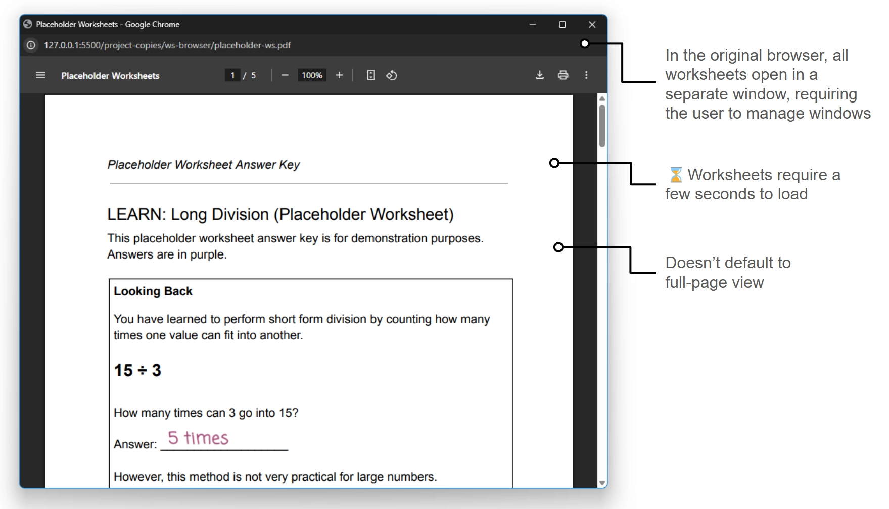
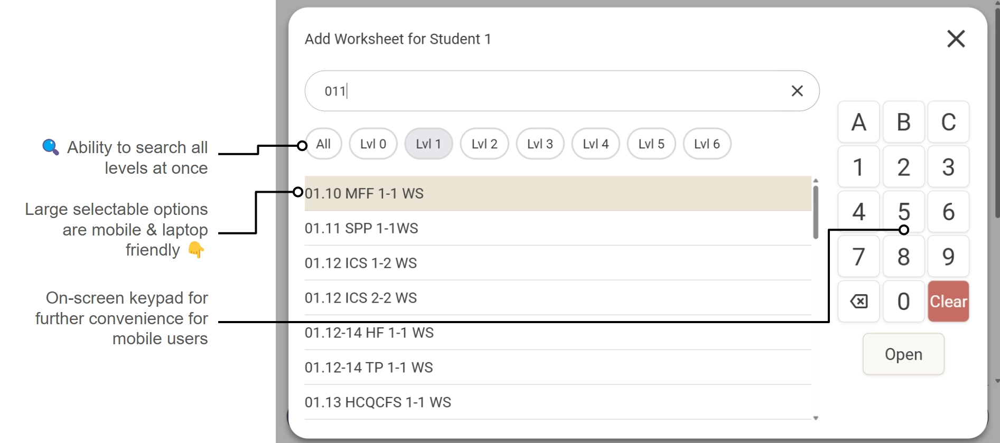

Worksheet Solutions Browser
Workplace project
Spring 2025
Problem and Solution
When I teach math to elementary students at my workplace, I correct students' worksheets using a website to browse answer keys. Since I do this in-class while teaching, it's critical that this process is as fast and smooth as possible.
However, the website we use can sometimes be slow to load and slow to navigate.
Problem: Original Worksheet Browser
The worksheet browser we use at my workplace suffers from a few inefficiencies (click here to try an interactive mockup).
Slow loading:
- ⌛ Worksheets take a few seconds to load
- ⌛ Worksheet lists take a few seconds to load
Slow navigation:
- 🔍 Only allows browsing one subject level at a time
- 🚫 No search bar: requires manual scrolling or Ctrl+F to find a worksheet
- 👇 Small action buttons are less friendly for mobile and laptops
- ⿻ All worksheets open in a separate window, requiring the user to manage windows
- 🔍︎ Worksheet pdfs don't default to full-page view

Solution: New Worksheet Browser
My solution was to design and build my own website for browsing answer keys.
This tool doubles as a way for math trainers to record what worksheets our students were working on.
I made a rough wireframe of the layout, which professional designer Paul Heuschmidt refined into a professional and aesthetically pleasing design in Figma. Then, I built the website with React.
Fast loading:
- ⚡ All worksheets load instantly
- ⚡ Worksheet list loads instantly
Fast navigation:
- 🖥️ All worksheets can be viewed on one screen, rather than separate windows
- ↔️ Navigate to any page with one click and drag
- 🔍 Search all levels at once, instead of only one
- 👇 Large selectable options are mobile and laptop friendly
- 📅 On-screen keypad for further convenience for mobile users
Fast progress tracking:
- 📝 Record what worksheets each student works on during class
- 📝 Record notes about what was done with each worksheet
- 🧩 This system uses Google Apps Script to integrate with our student progress tracking spreadsheet

Skills Demonstrated
Technical skills:
- React, HTML, CSS, Javascript
- Building a component-based web app from the ground up
- npm, git
- Google Apps Script
- Debugging, performance optimization
- Cross-browser and cross-device compatibility testing and fixing
- Designing responsive layouts for all devices
- Prototyping, iterative design
Soft skills:
- UI/UX Design
- UX Writing
- Wireframing in Figma
- User-centered design, user testing
Results
- The new browser became an invaluable tool for teaching students math more easily and efficiently.
- The new browser improves usability on tablets